Se encuentra en la región de la torre de Picos Gemelos, y para acceder a él tienes que haber completado tres misiones secundarias: Los cucos perdidos, La fuente de la gran hada y A la luz de las luciérnagas. Solo entonces podrás acceder a la Prueba heroica: La reliquia perdida. Si las has completado entra en la casa de Impa y verás que se han llevado la esfera que se guardaba allí.
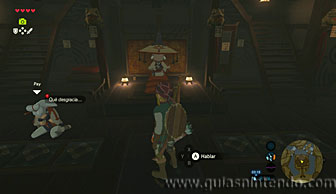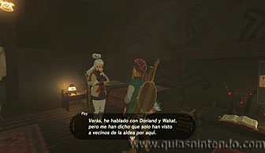
Ahora tendrás que seguir a uno de los guardias que custodian la entrada de la casa de Impa. Él abandona su puesto a las 10 de la noche y debes seguirle sin acercarte mucho a él para que no se percate de tu presencia. Si lo haces bien te llevará hasta la entrada al Santuario, pero este se encuentra desactivado. Cuando se pare delante de él, debes cruzar el puente y acercarte.
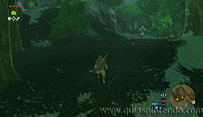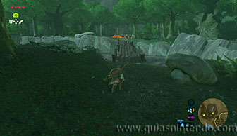
Entonces verás unas escenas en donde hará aparición un oficial del clan Yiga. Tendrás que enfrentarte a él y derrotarle. Debes tener cuidado con sus golpes, ya que te puede derrotar con un solo golpe.
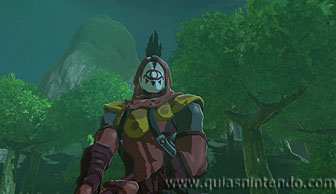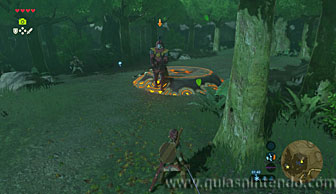
Lo mejor es que te acerques con cuidado y esquives uno de sus ataques para poder contraatacarle (cuando se ralentiza el tiempo).
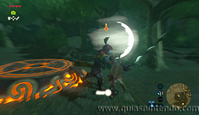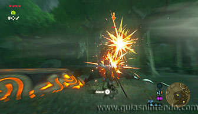
A veces desaparecerá y volverá a aparecer en otro lugar, ten cuidado por si aparece a tu espalda. Si mantienes la distancia y atacas después de que él lo haya hecho podrás ir rebajando su energía rápidamente hasta derrotarle.
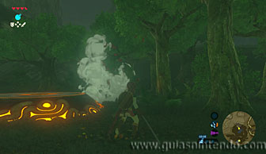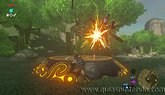
Así completarás la Prueba heroica: La reliquia perdida y puedes coger el mandoble del huracán que portaba tu enemigo. Después coge la esfera y colócala en el agujero para hacer que el santuario aparezca.
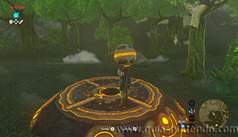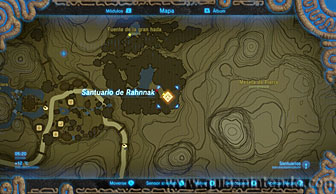
Una vez dentro solo tendrás que abrir un cofre que hay antes de llegar al altar. En él encuentras el mandoble de la serenidad.
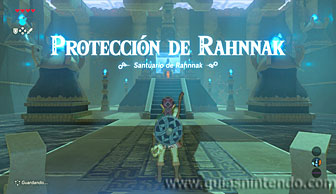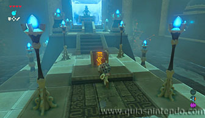